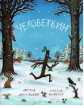

Человеткин

- Нет! Я не палка! Пусти меня! Стой! Я ЧЕЛОВЕТКИН, разумный, живой! Я Человеткин, мне нужно домой! Одним весенним днём Человеткин отправился на пробежку, но был схвачен собакой, которая приняла его за обыкновенную палку. Дети играли и бросили его в реку, а лебедь увидел в нем прутик дня гнезда. Осень сменит лето, придёт снежная зима - горемычный Человеткин перебывает мачтой для флага, шпагой, клюшкой, бумерангом, рукой для снеговика. Неужели он никогда не вернется домой, к челодеткам? Похоже, у Чарли Кука теперь появится новая любимая книга, а у рыбки Тюльки - новый предлог для того, чтобы опоздать в школу. Для чтения взрослыми детям.